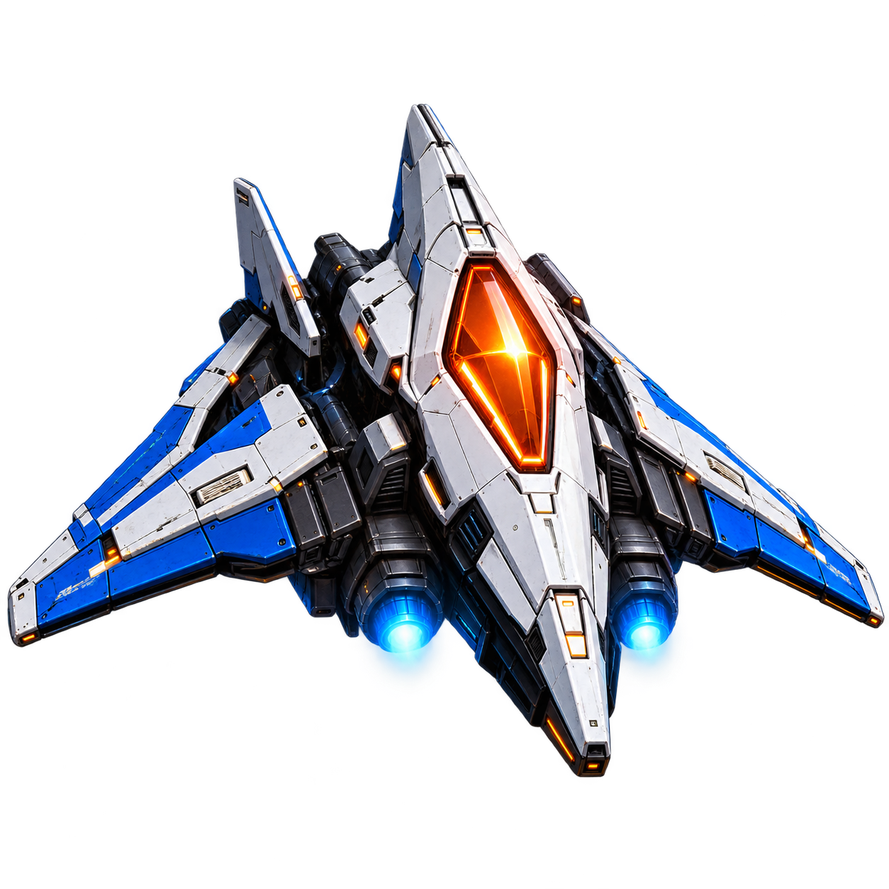
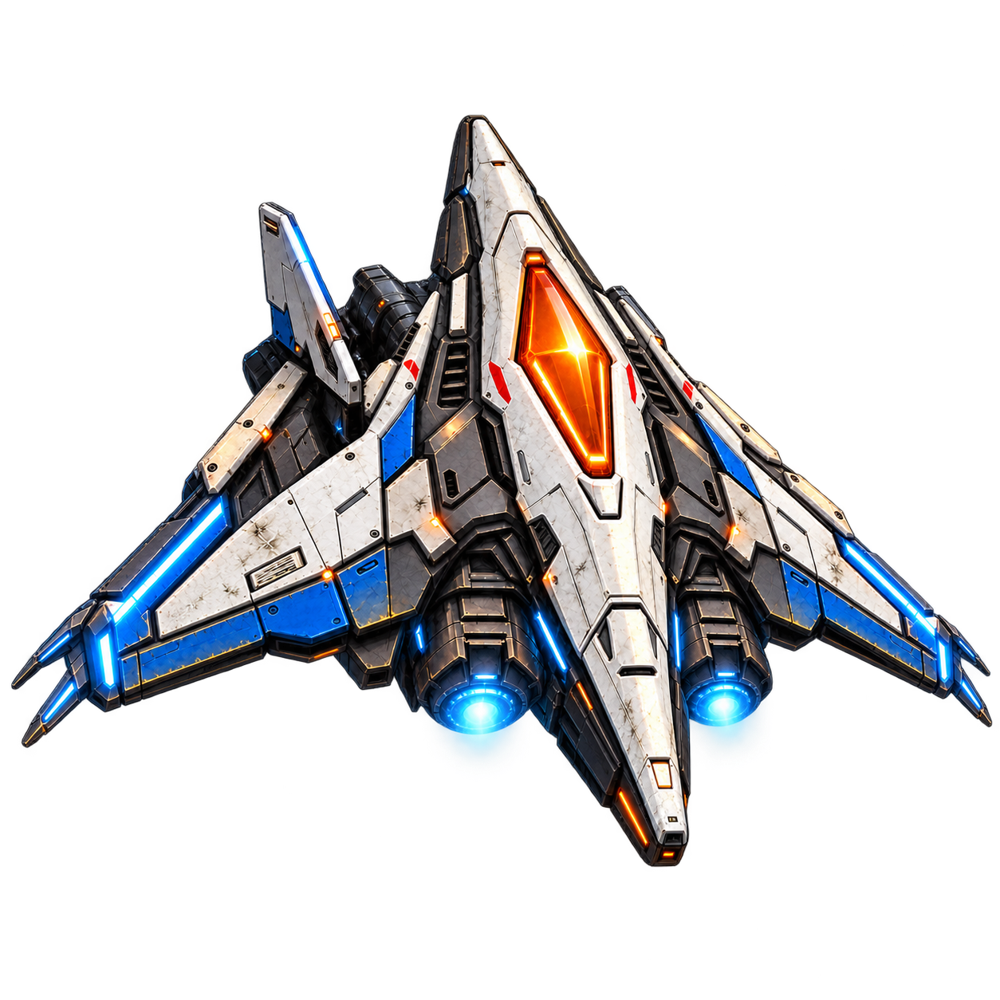
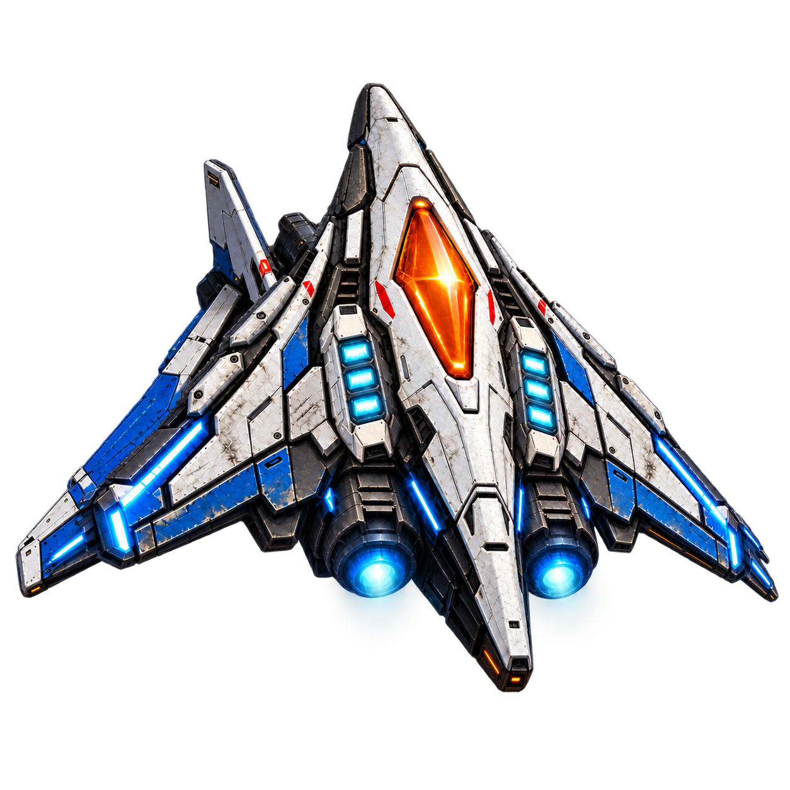
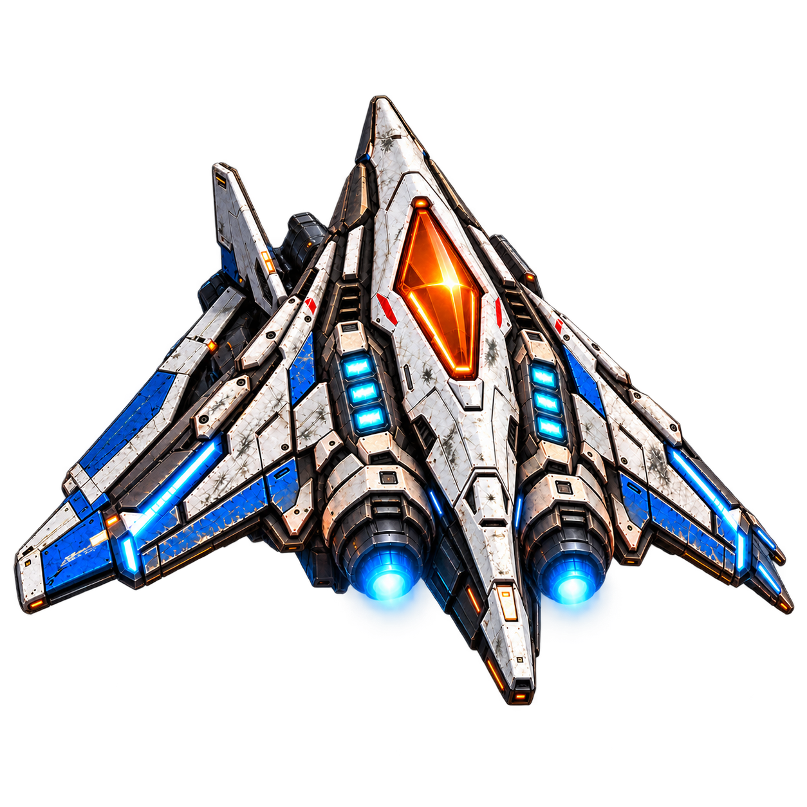
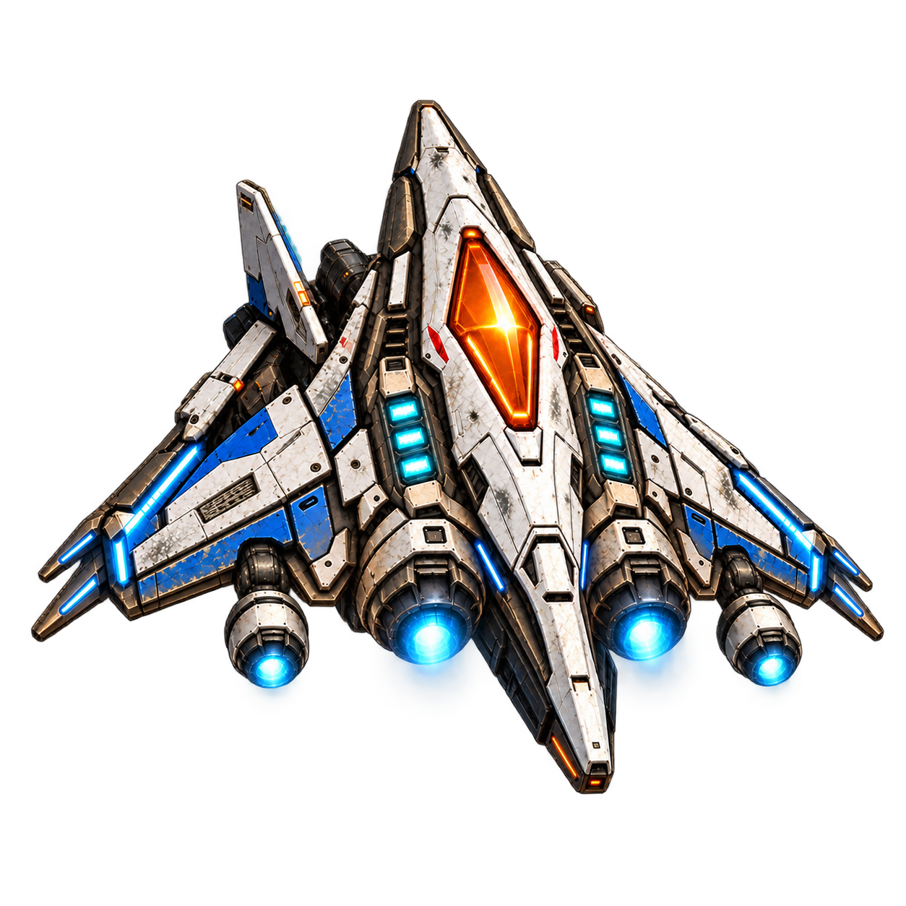
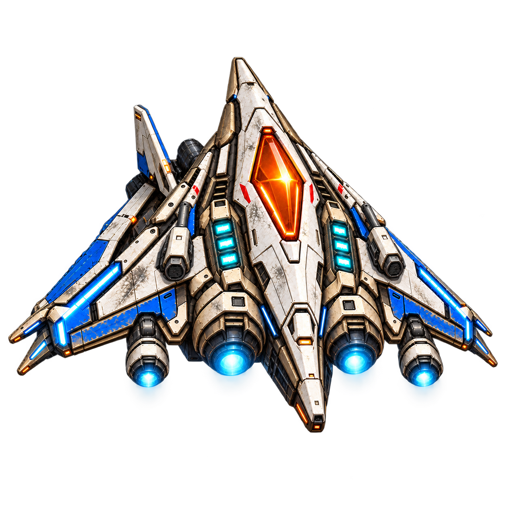
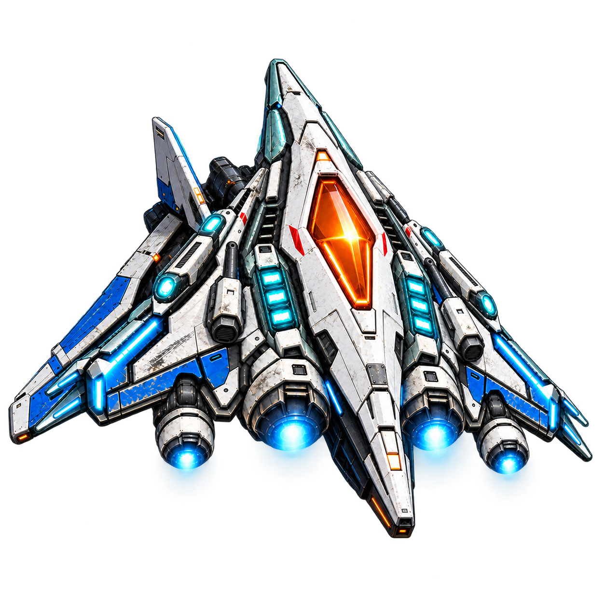
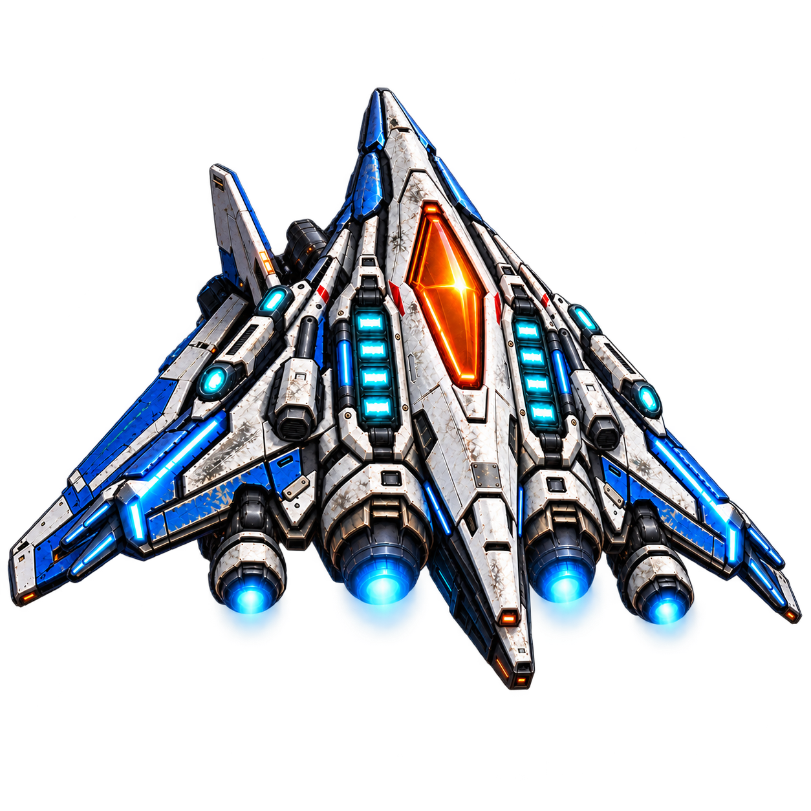
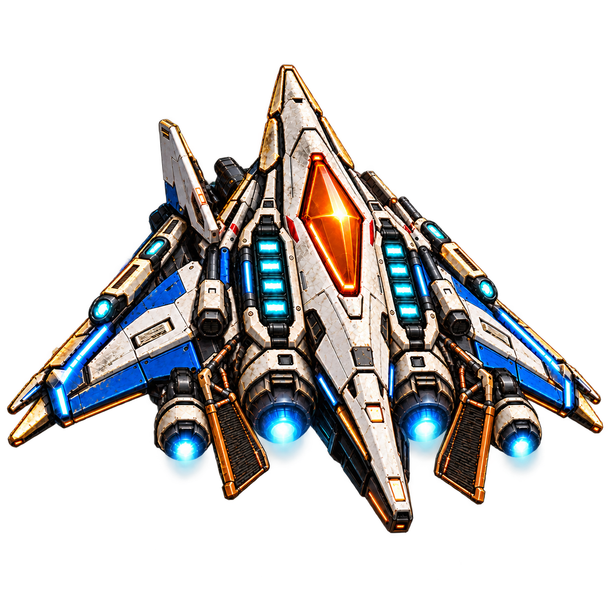

Базовый корабль с двумя двигателями
Предлагаемая роль в игре: Исходные возможности корабля
Накопленный износ: Лёгкие эксплуатационные потёртости; корабль обслужен и готов к вылету
Один узнаваемый корабль, накопленные улучшения и износ, презентация нового оборудования Максом.
Предложено к реализацииИгровые эффекты, параметры сцен и английские реплики — проект. Числовые бонусы пока не определены. Наличие изображений не подтверждает реализацию механик.
Player Interceptor проходит вместе с Andygen путь от Mercury до Neptune и бонусной миссии Solar Crown. После каждой завершённой планеты Max готовит его к следующей: устанавливает новый пакет оборудования, ремонтирует повреждения и коротко объясняет, что изменилось.
Корабль сохраняет узнаваемую основу: вытянутый нос, стреловидный силуэт, оранжевую ромбовидную кабину, светлую обшивку, синие панели и голубое свечение двигателей. Его история становится видна в конструкции и поверхности — новых модулях, царапинах, сколах и следах ремонта.
Каждый переход приносит один основной пакет улучшений. Уже установленное оборудование сохраняется. Там, где это оправдано, новый узел заменяет прежний на том же месте: перед Neptune блоки щита становятся четырёхсекционными. На старте у корабля два двигателя; с Jupiter — четыре.
Название стадии обозначает планету, к которой корабль подготовлен. Например, версия Jupiter появляется после прохождения Mars.
Улучшения помогают справляться с условиями следующей главы. Ветер, холод, плазменные стены и солнечные вспышки сохраняют свою роль. Баланс урона, прочности, ёмкости и перезарядки определяется при реализации.
Ангарные виды — существующие изображения из проекта игры, с локальным свечением сопел без длинного полётного выхлопа. Полётные концепты v9 доступны отдельно в каждой карточке.
Начало кампании

Предлагаемая роль в игре: Исходные возможности корабля
Накопленный износ: Лёгкие эксплуатационные потёртости; корабль обслужен и готов к вылету
После Mercury, 1-5

Предлагаемая роль в игре: Устойчивость к кислотной среде и кратким помехам
Накопленный износ: Дополнительные мелкие царапины на носу и крыльях, небольшие сколы кромок
После Venus, 2-5

Предлагаемая роль в игре: Более быстрое восстановление щита после перерыва в попаданиях
Накопленный износ: Матовые участки покрытия, потёртости синих панелей, первые заметные диагональные царапины
После Earth, 3-5

Предлагаемая роль в игре: Дополнительный запас прочности
Накопленный износ: Выраженные сколы по кромкам, истёртые сервисные панели, небольшие следы ударов
После Mars, 4-5

Предлагаемая роль в игре: Более точная коррекция курса при смене ветра
Накопленный износ: Более глубокие потёртости, повреждения краски на крыльях, следы нагрева старых моторных отсеков
После Jupiter, 5-5

Предлагаемая роль в игре: Парный огонь вперёд
Накопленный износ: Накопленные сколы и следы воздействия среды; появляются аккуратные ремонтные швы
После Saturn, 6-5

Предлагаемая роль в игре: Короткий направленный импульс с перезарядкой
Накопленный износ: Длинные царапины на крыльях, затёртые крепления и небольшие ремонтные накладки
После Uranus, 7-5

Предлагаемая роль в игре: Увеличенный аварийный резерв щита
Накопленный износ: Более широкие участки стёртого покрытия, заметный ремонт старой обшивки
После финала Neptune и титров, при открытии эпилога

Предлагаемая роль в игре: Дополнительный тепловой запас в солнечной короне
Накопленный износ: Наиболее изношенный старый корпус: следы всей кампании рядом со свежей термозащитой
Каждая следующая стадия выглядит более обжитой. На старом корпусе сохраняются предыдущие повреждения и появляются новые. Max возвращает кораблю работоспособность, при этом мелкие царапины, затёртая краска и аккуратные следы ремонта остаются частью его внешности.
| Стадия | Состояние старого корпуса |
|---|---|
| Mercury | Лёгкие эксплуатационные потёртости; корабль обслужен и готов к вылету |
| Venus | Дополнительные мелкие царапины на носу и крыльях, небольшие сколы кромок |
| Earth | Матовые участки покрытия, потёртости синих панелей, первые заметные диагональные царапины |
| Mars | Выраженные сколы по кромкам, истёртые сервисные панели, небольшие следы ударов |
| Jupiter | Более глубокие потёртости, повреждения краски на крыльях, следы нагрева старых моторных отсеков |
| Saturn | Накопленные сколы и следы воздействия среды; появляются аккуратные ремонтные швы |
| Uranus | Длинные царапины на крыльях, затёртые крепления и небольшие ремонтные накладки |
| Neptune | Более широкие участки стёртого покрытия, заметный ремонт старой обшивки |
| Solar Crown | Наиболее изношенный старый корпус: следы всей кампании рядом со свежей термозащитой |
Новые модули при установке выглядят свежее соседних панелей. Затем они тоже постепенно изнашиваются. Повреждения распределяются неравномерно: больше на кромках, вокруг креплений, сервисных люков и двигателей. Светлая обшивка и синие опознавательные панели остаются читаемыми.
Этот износ отражает пройденный путь. Текущий запас здоровья в бою отображается отдельно: полностью отремонтированный корабль поздней стадии всё равно сохраняет свои старые царапины.
Светлые поверхности мягко принимают оттенок текущей планеты. Оранжевая кабина, синие панели и голубое свечение систем сохраняют свои основные цвета.
| Локация | Отражённый свет |
|---|---|
| Mercury | Медный и янтарный |
| Venus | Мягкое золото и шампанское, слабый оливковый оттенок |
| Earth | Холодный голубой, белый и лёгкий сине-зелёный |
| Mars | Терракотовый и красно-медный |
| Jupiter | Кремовый, охристый, медный; холодные блики молний |
| Saturn | Жемчужно-бежевый, бледное золото и ледяные блики |
| Uranus | Приглушённый бирюзовый и ледяной голубой |
| Neptune | Глубокий синий с умеренным индиго |
| Solar Crown | Бело-золотой и горячий оранжевый по освещённым кромкам |
При повторном посещении планеты корабль сохраняет накопленные улучшения и износ, а отражения соответствуют текущему окружению. В ангаре внешний вид определяется освещением ангара.
В полёте выхлоп имеет яркое бело-голубое ядро и узкий неоднородный полупрозрачный шлейф. Его характер остаётся одинаковым на всех стадиях. Установка дополнительных турбин увеличивает число струй; основные двигатели не получают всё более огромные и мультяшные огненные конусы.
В ангаре используются уже подготовленные отдельные изображения корабля без полётного выхлопа. Допустимы локальные огни сопел и бортовых систем. Масштаб и положение корабля между стадиями должны позволять сравнивать установленные детали.
После завершения главы Max показывает обновлённый корабль в ангаре. Короткий акцент на новом оборудовании, две-три реплики и одна понятная строка пользы связывают визуальное изменение с игрой.
Предлагаемая длительность сцены — 12–18 секунд, с возможностью пропуска. Улучшение выдаётся за прохождение главы независимо от просмотра сцены и сохраняется при следующих посещениях ангара. Повторный просмотр не выдаёт награду заново.
Перед Neptune сцена сдержанная, без шуток и фанфар: отсутствие ROOK ещё чувствуется. Презентация Solar Crown появляется только после основного финала и открытия бонусной миссии.
Английские реплики — VO-черновик; русский смысл доступен под каждой сценой. Получение улучшения не зависит от просмотра сцены; повторный просмотр не выдаёт награду заново.
Дополнительные турбины перед Jupiter не отменяют спасение Andygen Рексом в 5-3.
Лазеры корабля перед Uranus не заменяют сканирование ROOK и не предотвращают события 7-5.
Перед началом Neptune улучшение щита не возвращает голос, анализ и подсказки ROOK. Реплика Max о найденной резервной копии остаётся после 8-1.
Solar Crown — бонусный эпилог после титров. Основная история завершается на Neptune. Термозащита сохраняет необходимость управлять нагревом и искать безопасные зоны.
{kind=link}
{kind=link}
{kind=link}
{kind=link}
{kind=link}
{kind=link}
{kind=link}
{kind=link}
{kind=link}
{kind=link}
{kind=link}
{kind=link}
{kind=link}
{kind=link}
{kind=link}
{kind=link}
{kind=link}
{kind=link}